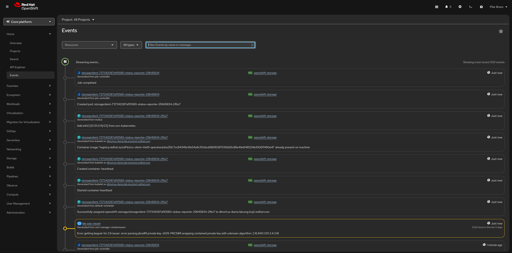

The events page
In OpenShift Container Platform, the events page provides a unified view of the system events occurring within your cluster. Events are records of real-world activities or state changes that happen to API objects, allowing developers and administrators to monitor and troubleshoot system components.
Because events are treated as informative, supplemental data, they have a limited retention time and will eventually expire and be deleted to prevent filling up etcd storage.
It is possible to modify the retention time for events, but you cannot increase it beyond the default 3 hours. Because events are stored in the cluster’s etcd database, their lifespan is strictly limited to prevent etcd from filling up, which could cause latency and cluster performance issues. If your goal is to maintain a permanent security or administrative trail, you should use API Audit Logging rather than standard cluster events. You can deploy the OpenShift Logging subsystem to automatically collect, manage, and permanently forward these audit and infrastructure logs to external storage systems (like AWS S3, Google Cloud Storage, or Splunk)
|

You can view events in the OpenShift Container Platform web console in a few different ways depending on the scope of what you are investigating:
-
Project-level Events: Navigate to Home → Events and select your project from the drop-down menu to see all events scoped to that specific namespace.
-
Resource-specific Events: Many objects, such as pods, deployments, or services, have their own dedicated Events tab on their details page (e.g., navigating to Home → Projects → Your Project). This tab filters the view to show only the events related to that specific object.
-
High-level Overview: You can also see a list of ongoing cluster activities and recent events directly from the Home → Overview dashboard.
The Events page includes several filtering options to help you pinpoint specific issues:
-
Resources list: Allows you to select a specific resource to see only the events associated with it.
-
All Types list: Allows you to filter events by their severity type, such as showing only Warning or Normal events.
-
Search bar: Allows you to search for specific events by typing names or keywords found in the event messages.
The events shown on the page cover a wide range of system activities. Common categories include:
-
Container events: Indicates the lifecycle of a container, such as Created, Started, Killing, Preempting, or BackOff (when restarting a failed container is delayed).
-
Image events: Tracks the status of container images, such as Pulling, Pulled, InspectFailed, or Failed.
-
Health events: Shows when a container is marked as Unhealthy.
-
Configuration events: Shows issues like FailedValidation for pod configurations.
-
Node events: Displays infrastructure-related events, which are typically found in the
defaultnamespace.